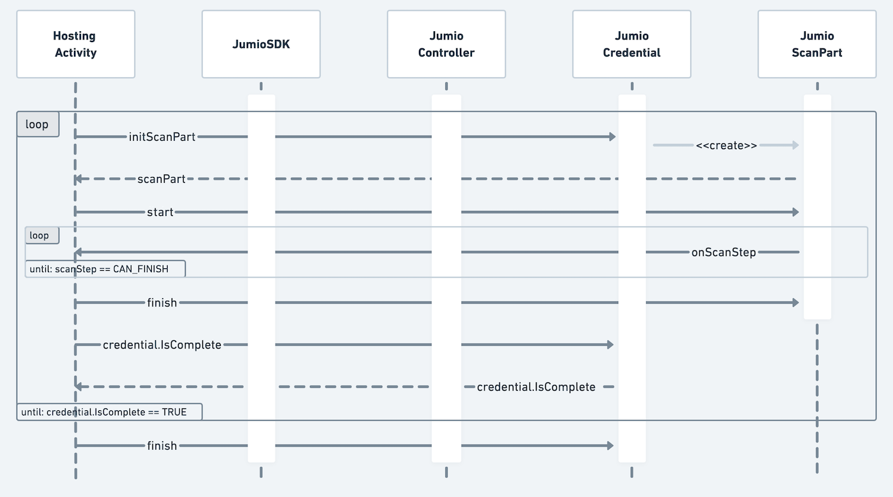

Integration Guide for Android SDK
Jumio’s products allow businesses to establish the genuine identity of their users by verifying government-issued IDs in real-time. ID Verification, Identity Verification and other services are used by financial service organizations and other leading brands to create trust for safe onboarding, money transfers and user authentication.
Code Documentation
Full API documentation for the Jumio Android SDK can be found here.
Get Started
The basic setup is required before continuing with the following setup for the Jumio SDK.
Dependencies
The SDK Setup Tool is a web tool that helps determine available product combinations and corresponding dependencies for the Jumio SDK, as well as an export feature to easily import the applied changes straight into your codebase.

Below you can find a list of dependencies that can be added to your application to enable different functionality of the Jumio SDK. Some modules are mandatory, others are optional.
If an optional module is not linked, some functionalities may not be available, but the library size will be reduced. The Sample app apk size is currently around 17 MB.
// [Mandatory] Jumio Core library
dependencies {
implementation "com.jumio.android:core:4.6.0"
...
}
// [Optional] Extraction methods
dependencies {
implementation "com.jumio.android:mrz:4.6.0" // MRZ scanning
implementation "com.jumio.android:nfc:4.6.0" // NFC scanning
implementation "com.jumio.android:linefinder:4.6.0" // Linefinder scanning
implementation "com.jumio.android:docfinder:4.6.0" // Autocapture library
implementation "com.jumio.android:barcode:4.6.0" // Barcode scanning
implementation "com.jumio.android:iproov:4.6.0" // Face Liveness library
implementation "com.jumio.android:liveness:4.6.0" // Face Liveness library
implementation "com.jumio.android:digital-identity:4.6.0" // Digital Identity verification library
...
}
// [Optional] Extraction methods alternatives
dependencies {
implementation "com.jumio.android:barcode-mlkit:4.6.0" // Barcode scanning alternative
...
}
// [Optional] Jumio Default UI
dependencies {
implementation "com.jumio.android:defaultui:4.6.0"
...
}
// [Optional] Additional functionality
dependencies {
implementation "com.jumio.android:datadog:4.6.0" // Analytics library
implementation "com.jumio.android:devicerisk:4.6.0" // Device fingerprinting library
...
}
SDK Version Check
Use JumioSDK.sdkVersion to check which SDK version is being used.
Root Detection
For security reasons, applications implementing the SDK should not run on rooted devices. Use either the below method or a self-devised check to prevent usage of SDK scanning functionality on rooted devices.
JumioSDK.isRooted(context: Context)
⚠️ Note: Please be aware that the JumioSDK root check uses various mechanisms for detection, but doesn't guarantee to detect 100% of all rooted devices.
Device Supported Check
Use the method below to check if the current device platform is supported by the SDK.
JumioSDK.isSupportedPlatform(context: Context)
Autocapture
The module com.jumio.android:docfinder offers one generic scanning method across all ID documents, providing a more seamless capture experience for the end user. The SDK will automatically detect which type of ID document is presented by the user and guide them through the capturing process with live feedback.
The models can be bundled with the app directly to save time on the download during the SDK runtime. Therefore download the following files from here and here and add it to the app assets folder.
Certified Face Liveness
Jumio uses Certified Liveness technology to determine liveness. Link com.jumio.android:liveness and com.jumio.android:iproov modules in order to use Jumio Liveness.
If necessary, the iProov SDK version can be overwritten with a more recent one:
implementation "com.jumio.android:iproov:4.6.0"
implementation("com.iproov.sdk:iproov:8.3.1") {
exclude group: 'org.json', module: 'json'
}
Barcode Scanning Alternative
As an alternative to the com.jumio.android:barcode dependency, you can substitute com.jumio.android:barcode-mlkit. This dependency includes com.google.android.gms:play-services-mlkit-barcode-scanning library - if your application includes other Google ML-kit libraries, it might be necessary to override meta-data specified in the application tag of the play-services-mlkit-barcode-scanning manifest by merging multiple manifests:
<meta-data
android:name="com.google.android.gms.vision.DEPENDENCIES"
android:value="barcode"
tools:replace="android:value" />
Privacy Notice
If the module com.jumio.android:devicerisk is linked we collect data depending on the permissions given for fraud detection on
- Location
- Battery Usage
- Device Identifier
- Device Storage
- MAC Address
- SIM information (MNC, MCC, IMEI, Phone Number, Phone Type (GSM/CDMA), SIM Number, etc.)
- Google Services ID
If you submit your app to the Google Play Store a Prominent Disclosure explaining the collected User Data is required. The collected user data also needs to be declared in your Data Safety Form and the Privacy Policy related to your application.
Other stores might require something similar - please check before submitting your app to the store.
Please see the Jumio Privacy Policy for Online Services for further information.
Digital Identity (DID)
In case Digital Identity verification has been enabled for your account you can add the com.jumio.android:digital-identity dependency to your application. This will enable you to make use of DID verification within the SDK.
Over the course of DID verification the SDK will launch an according third party application representing your Digital Identity. Communication between both applications (your integrating application and the Digital Identity application) is done via a so-called "deep link". For more information on deep link handling on Android please check out their official guide.
Deep link setup
To enable your app specific deep link, our support team has to setup an according scheme of your choice for you. This scheme will be used by the SDK to identify your application while returning from the DID provider's application. For the scheme basically any string can be used, however it is recommended that it is unique to your application in some way. A suggestion would be your company name.
Following snippet shows how the deep link needs to be setup in your application's AndroidManifest.xml file:
<activity
android:name="com.jumio.app.HostingActivity"
android:exported="true"
android:launchMode="singleTask"
android:theme="@style/Theme.Jumio">
<intent-filter>
<action android:name="android.intent.action.VIEW" />
<category android:name="android.intent.category.DEFAULT" />
<category android:name="android.intent.category.BROWSABLE" />
<data android:scheme="<your-app-scheme>" />
</intent-filter>
</activity>
Please note that the properties android:exported="true" and android:launchMode="singleTask" need to be specified as well. The first parameter basically tells the Android system that your Activity can be found by the system and other applications. By specifying launchMode="singleTask" any already running task for this Activity will be resumed (instead of creating a new instance). Both are requirements so that the SDK can handle the according deep link correctly.
In case you are using Jumio's Default UI in your app (see section Default UI) you also need to specify tools:replace="android:exported" to JumioActivity's <activity> tag like so:
<activity
android:name="com.jumio.defaultui.JumioActivity"
android:exported="true"
android:launchMode="singleTask"
tools:replace="android:exported">
<intent-filter>
...
</intent-filter>
</activity>
As deep link handling happens on Activity level, the according data needs to be forwarded to the SDK via Activity.onNewIntent(). The following code snippet shows how this can be achieved. If you're using Jumio's Default UI you can ignore this step.
override fun onNewIntent(intent: Intent) {
super.onNewIntent(intent)
intent.data?.let { deepLink ->
val activeScanPart = scanPart ?: return
JumioDeepLinkHandler.consumeForScanPart(deepLink, activeScanPart)
}
}
Initialization
Requesting a Token (via OAuth2)
Your OAuth2 credentials are constructed using your API token as the Client ID and your API secret as the Client secret. You can view and manage your Client ID and secret in the Customer Portal under:
- Settings > API credentials > OAuth2 Clients
Client ID and Client secret are used to generate an OAuth2 access token. Send a workflow request using the acquired OAuth2 access token to receive the SDK token necessary to initialize the Jumio SDK.
OAuth2 has to be activated for your account. Contact your Jumio Account Manager for activation. For more details, please refer to Authentication and Encryption.
Initializing the Jumio SDK
Use your aquired SDK token and your according datacenter to initialize the JumioSDK:
const val YOUR_SDK_TOKEN = ""
const val YOUR_DATACENTER = ""
sdk = JumioSDK(context: Context).apply {
token = "YOUR_SDK_TOKEN"
datacenter = "YOUR_DATACENTER"
}
Data center is set to "US" by default. If your customer account is in the EU data center, use "EU" instead. Alternatively, use "SG" for Singapore.
⚠️ Note: We strongly recommend storing all credentials outside of your app! We suggest loading them during runtime from your server-side implementation.
Configuration
Every Jumio SDK instance is initialized using a specific sdk.token. This token contains information about the workflow, credentials, transaction identifiers and other parameters. Configuration of this token allows you to provide your own internal tracking information for the user and their transaction, specify what user information is captured and by which method, as well as preset options to enhance the user journey. Values configured within the sdk.token during your API request will override any corresponding settings configured in the Customer Portal.
Worfklow Selection
Use ID verification callback to receive a verification status and verified data positions (see Callback section). Make sure that your customer account is enabled to use this feature. A callback URL can be specified for individual transactions (for URL constraints see chapter Callback URL). This setting overrides any callback URL you have set in the Jumio Customer Portal. Your callback URL must not contain sensitive data like PII (Personally Identifiable Information) or account login. Set your callback URL using the callbackUrl parameter.
Use the correct workflow definition key in order to request a specific workflow. Set your key using the workflowDefinition.key parameter.
{
"customerInternalReference": "CUSTOMER_REFERENCE",
"workflowDefinition": {
"key": "X"
},
"callbackUrl": "YOUR_CALLBACK_URL"
}
For more details, please refer to our Workflow Description Guide.
ℹ️ Note: Identity Verification requires portrait orientation in your app.
Transaction Identifiers
There are several options in order to uniquely identify specific transactions. customerInternalReference allows you to specify your own unique identifier for a certain scan (max. 100 characters). Use reportingCriteria, to identify the scan in your reports (max. 100 characters). You can also set a unique identifier for each user using userReference (max. 100 characters).
For more details, please refer to our API Guide.
{
"customerInternalReference": "CUSTOMER_REFERENCE",
"workflowDefinition": {
"key": "X"
},
"reportingCriteria": "YOUR_REPORTING_CRITERIA",
"userReference": "YOUR_USER_REFERENCE"
}
⚠️ Note: Transaction identifiers must not contain sensitive data like PII (Personally Identifiable Information) or account login.
Preselection
You can specify issuing country using ISO 3166-1 alpha-3 country codes, as well as ID types to skip selection during the scanning process. In the example down below, Austria ("AUT") and the USA ("USA") have been preselected. PASSPORT and DRIVER_LICENSE have been chosen as preselected document types. If all parameters are preselected and valid and there is only one given combination (one country and one document type), the document selection screen in the SDK can be skipped entirely.
For more details, please refer to our API Guide.
⚠️ Note: "Digital Identity" document type can not be preselected!
{
"customerInternalReference": "CUSTOMER_REFERENCE",
"workflowDefinition": {
"key": X,
"credentials": [
{
"category": "ID",
"type": {
"values": [
"DRIVING_LICENSE",
"PASSPORT"
]
},
"country": {
"values": [
"AUT",
"USA"
]
}
}
]
}
}
Miscellaneous
Use cameraFacing attribute of JumioScanView to configure the default camera and set it to FRONT or BACK.
scanView.cameraFacing = JumioCameraFacing.FRONT
SDK Workflow
Retrieving Information
The SDK returns a JumioResult object which contains the result of the finished workflow. Extracted ID data will not be returned by default - please contact Jumio Customer Service at support@jumio.com in case this is needed.
The following tables give information on the specification of all data parameters and errors:
Class JumioIDResult
| Parameter | Type | Max. length | Description |
|---|---|---|---|
| issuingCountry | String | 3 | Country of issue as ISO 3166-1 alpha-3 country code |
| idType | String | PASSPORT, DRIVER_LICENSE, IDENTITY_CARD or VISA as provided or selected | |
| firstName | String | 100 | First name of the customer |
| lastName | String | 100 | Last name of the customer |
| dateOfBirth | String | Date of birth | |
| issuingDate | String | Date of issue | |
| expiryDate | String | Date of expiry | |
| documentNumber | String | 100 | Identification number of the document |
| personalNumber | String | 14 | Personal number of the document |
| gender | String | Gender M, F or X | |
| nationality | String | Nationality of the customer | |
| placeOfBirth | String | 255 | Place of birth |
| country | String | Country of residence | |
| address | String | 64 | Street name of residence |
| city | String | 64 | City of residence |
| subdivision | String | 3 | Last three characters of ISO 3166-2:US or ISO 3166-2:CA subdivision code |
| postalCode | String | 15 | Postal code of residence |
| mrzLine1 | String | 50 | MRZ line 1 |
| mrzLine2 | String | 50 | MRZ line 2 |
| mrzLine3 | String | 50 | MRZ line 3 |
| rawBarcodeData | String | 50 | Extracted barcode data |
| extractionMethod | JumioScanMode | Extraction method used during scanning (MRZ, BARCODE, MANUAL, OCR_CARD, NFC) | |
| imageData | JumioImageData | Wrapper class for accessing image data of all credential parts from an ID verification session. This feature has to be enabled by your account manager. |
Class JumioFaceResult
| Parameter | Type | Max. length | Description |
|---|---|---|---|
| passed | Boolean | ||
| extractionMethod | JumioScanMode | Extraction method used during scanning (FACE_MANUAL, FACE_IPROOV) | |
| imageData | JumioImageData | Wrapper class for accessing image data of all credential parts from an ID verification session. This feature has to be enabled by your account manager. |
Class JumioRejectReason
List of all possible reject reasons returned if Instant Feedback is used:
| Code | Message | Description | Check enabled server-side (2022-05-25) |
|---|---|---|---|
| 102 | BLACK_WHITE_COPY | Document appears to be a black and white photocopy | x |
| 103 | COLOR_PHOTOCOPY | Document appears to be a colored photocopy | |
| 104 | DIGITAL_COPY | Document appears to be a digital copy | x |
| 200 | NOT_READABLE | Document is not readable | |
| 201 | NO_DOC | No document could be detected | x |
| 206 | MISSING_BACK | Backside of the document is missing | x |
| 214 | MISSING_FRONT | Frontside of the document is missing | x |
| 2001 | BLURRY | Document image is unusable because it is blurry | x |
| 2003 | MISSING_PART_DOC | Part of the document is missing | x |
| 2004 | HIDDEN_PART_DOC | Part of the document is hidden | |
| 2005 | DAMAGED_DOCUMENT | Document appears to be damaged | |
| 2006 | GLARE | Document image is unusable because of glare | x |
Error Codes
List of all error codes that are available via the code and message properties of the JumioError object. The first letter (A-J) represents the error case. The remaining characters are represented by numbers that contain information helping us understand the problem situation (format: [xx][yyyy]).
| Code | Message | Description |
|---|---|---|
| A[xx][yyyy] | We have encountered a network communication problem | Retry possible, user decided to cancel |
| B[xx][yyyy] | Authentication failed | Secure connection could not be established, retry impossible |
| C[xx]0401 | Authentication failed | API credentials invalid, retry impossible |
| E[xx]0000 | Connection error | Retry possible, user decided to cancel |
| F[xx]0000 | Scanning not available at this time, please contact the app vendor | Resources cannot be loaded, retry impossible |
| G[xx]0000 | Cancelled by end-user | No error occurred |
| H[xx]0000 | The camera is currently not available | Camera cannot be initialized, retry impossible |
| I[xx]0000 | Certificate not valid anymore. Please update your application | End-to-end encryption key not valid anymore, retry impossible |
| J[xx]0000 | Transaction already finished | User did not complete SDK journey within session lifetime |
| N[xx]0000 | Scanning not available at this time, please contact the app vendor | Required images are missing to finalize the acquisition |
⚠️ Note: Please always include error code and message when filing an error related issue to our support team.
Default UI
In case you're using Jumio's Default UI module (see Dependencies) you may declare the JumioActivity in your AndroidManifest.xml. With this you can use Jumio's default theme or specify a custom theme (see Customization for details). Also you can set the orientation to be sensor based or locked by using the attribute android:screenOrientation. Please note though that some screens in Jumio SDK launch in portrait mode only.
<activity
android:theme="@style/Theme.Jumio"
android:hardwareAccelerated="true"
android:name="com.jumio.defaultui.JumioActivity"
android:configChanges="orientation|screenSize|screenLayout|keyboardHidden" />
Custom UI
ID Verification can be also implemented as a custom scan view. This means that only the scan view (including the scan overlays) are provided by the SDK. The handling of the lifecycle, document selection, readability confirmation, intermediate callbacks, and all other steps necessary to complete a scan have to be handled by the client application that implements the SDK.
The following sequence diagram outlines components, callbacks and methods for a basic ID Verification workflow:

⚠️ Note: The new 3D face liveness capturing technology is not optimized for tablets. When using Identity Verification, the face scanner will fallback to a simple face capturing functionality instead. Portrait orientation support is required in your app.
CustomUI enables you to use a custom scan view with a plain scanning user interface. Initialize the Jumio SDK and set token and datacenter.
sdk = JumioSDK(context: Context).apply {
token = "YOUR_SDK_TOKEN"
datacenter = JumioDataCenter.YOUR_DATACENTER
}
JumioDataCentervalues:US,EU,SG
Controller Handling
Start the SDK by passing context and an instance of your class that implements JumioControllerInterface. You will receive a JumioController object in return:
val jumioController: JumioController = sdk.start(context, jumioControllerInterface)
When the jumioController is initialized, the following callback will be triggered:
onInitialized(credentials: List<JumioCredentialInfo>, consentItems: List<JumioConsentItems>?)
Consent Handling
To support compliance with various data protection laws, if a user’s consent is required the parameter consentItems will provide a list of JumioConsentItems. Each consent item contains a text, a consent type and an URL that will redirect the user to Jumio’s consent details. Each JumioConsentItem also provides a method spannedTextWithLinkColor(color: Int) that will return a spanned string containing the consent text and the link holder. If no color is specified, the link portion of the spanned string will only be underlined.
If no consent is required, the parameter consentItems will be null.
Each consent item can be one of two types:
* JumioConsentType.ACTIVE
* JumioConsentType.PASSIVE
For ACTIVE types, the user needs to accept the consent items explicitly, e.g. by enabling a UI switch or checking a checkbox for each consent item. For PASSIVE types, it is enough to present the consent text and URL to the user. The user implicitly accepts the passive consent items by continuing with the journey. For details please check out consent handling (1) (2) and consent adapter in our sample app.
The user can open and continue to the provided consent link if they choose to do so. If the user consents to Jumio's policy, jumioController.userConsented(consentItem: JumioConsentItem, userConsent: Boolean) is required to be called internally before any credential can be initialized and the user journey can continue. If no consent is required, the list of JumioConsentItems will be null. If the user does not consent or if jumioController.userConsented(consentItem: JumioConsentItem, userConsent: Boolean) is not called for all the items inside the consentItems list, the user will not be able to continue the user journey.
⚠️ Note: Please be aware that in cases where the list of consentItems is not null, the user must consent to Jumio's processing of personal information, including biometric data, and be provided a link to Jumio's Privacy Notice. Do not accept automatically without showing the user any terms.
Credential Handling
Obtain an instance of JumioCredential which will contain all necessary information about the verification process by calling start on the JumioController.
For ID verification you will receive a JumioIDCredential, for Identity Verification a JumioFaceCredential, and so on. Call isConfigured to check if the credential is already pre-configured. If so, it can be started right away.
val currentCredentialInfo = ...
val currentCredential = jumioController.start(currentCredentialInfo)
if (currentCredential?.isConfigured == true) {
// credential can be started
}
If the credential is not configured yet, it needs some more configuration before scan parts can be initialized. Details on how to configure each credential and retrieve the first scan part can be found below.
JumioCredentialCategoryvalues =ID,FACE,DOCUMENT,DATA
Jumio ID Credential
In case of JumioIDCredential, you can retrieve all available countries from supportedCountries. After selecting a specific country from that list, you can query available documents for that country by either calling getPhysicalDocumentsForCountry or getDigitalDocumentsForCountry. To configure the JumioIDCredential, pass your desired document as well as the country to setConfiguration().
Retrieve the supported countries:
idCredential = ... // Credential received via jumioController.start
val countries: List<String> = idCredential.countries
val country = countries.first { ... } // Select your desired country
Query available physical documents (e.g. passports or driving licenses):
val jumioDocuments = idCredential.getPhysicalDocumentsForCountry(country)
val document = jumioDocuments.first { it.type == JumioDocumentType.PASSPORT }
Query available digital documents ("Digital Identities"):
val jumioDocuments = idCredential.getDigitalDocumentsForCountry(country)
val document = jumioDocuments.first()
Set a valid country / document configuration:
idCredential.setConfiguration(country, document)
-
JumioPhysicalDocumentrepresents a singleJumioDocumentTypeandJumioDocumentVariantcombination -
JumioDocumentTypevalues:PASSPORT,VISA,DRIVING_LICENSE,ID_CARD -
JumioDocumentVariantvalues:PAPER,PLASTIC -
JumioDigitalDocumentrepresents a digital document ("Digital Identity")
Once the credential is configured, it is ready to initialize it's first scan part and start the verification process:
val credentialPart = idCredential.credentialParts.first()
idCredential.initScanPart(credentialPart, yourScanPartInterface)
Jumio Face Credential
In case of JumioFaceCredential, depending of the configuration the SDK uses the Certified Liveness technology from iProov to determine liveness or the manual face detection. The mode can be detected by checking the JumioScanMode of the JumioScanPart. Make sure to also implement FACE_MANUAL as a fallback, in case FACE_IPROOV is not available.
Retrieve the credential part of the credential to start the scanning process by calling:
val credentialPart = currentCredential?.credentialParts?.first()
val scanPart = currentCredential?.initScanPart(credentialPart, yourScanPartInterface)
or use the convenience method
val scanPart = currentCredential?.initScanPart(yourScanPartInterface)
Jumio Document Credential
In case of JumioDocumentCredential, there is the option to either acquire the image using the camera or selecting a PDF file from the device. Call setConfiguration with a JumioAcquireMode to select the preferred mode as described in the code documentation.
JumioAcquireModevalues:CAMERA,FILE
val acquireModes: List<JumioAcquireMode> = (credential as JumioDocumentCredential).availableAcquireModes
(currentCredential as JumioDocumentCredential).setConfiguration(acquireModes[0])
Retrieve the credential part of the credential to start the scanning process by calling:
val credentialPart = currentCredential?.credentialParts?.first()
val scanPart = currentCredential?.initScanPart(credentialPart, yourScanPartInterface)
or use the convenience method
val scanPart = currentCredential?.initScanPart(yourScanPartInterface)
If JumioAcquireMode FILE is used, the JumioFileAttacher needs to be utilized
to add a File or FileDescriptor for the selected JumioScanPart.
val fileAttacher = JumioFileAttacher()
fileAttacher.attach(scanPart)
val file = File("/path/to/your/file.pdf")
fileAttacher.setFile(file)
Jumio Data Credential
JumioDataCredential is used for the device fingerprinting. There are some optional configurations you can do to enhance it's behavior.
- Add the following Android permissions to your
AndroidManifest.xml, if not already added:
<manifest>
<!--Get user's GPS Location.-->
<uses-permission android:name="android.permission.ACCESS_COARSE_LOCATION" />
<uses-permission android:name="android.permission.ACCESS_FINE_LOCATION" />
<!--Get User's Wifi name and Status.-->
<uses-permission android:name="android.permission.ACCESS_WIFI_STATE" />
<!--Get User's Network information and State.-->
<uses-permission android:name="android.permission.ACCESS_NETWORK_STATE" />
<!--Get Phone and Network information (MNC, MCC, IMEI, Phone Number, Phone Type (GSM/CDMA), SIM Number, etc).-->
<uses-permission android:name="android.permission.READ_PHONE_STATE" />
<!--Get user's Biometric authentication settings (Face or Fingerprint authentication).-->
<uses-permission android:name="android.permission.USE_BIOMETRIC" />
<!--Get user's Biometric authentication settings (Face or Fingerprint authentication).-->
<uses-permission android:name="android.permission.USE_FINGERPRINT" />
<!--Write data into device to check re-installation behavior.-->
<uses-permission android:name="android.permission.WRITE_EXTERNAL_STORAGE" />
<!--Get External storage status, total size, free size, etc.-->
<uses-permission android:name="android.permission.READ_EXTERNAL_STORAGE" />
<!--Get GSFID (Google Services Id) for accurate identification for unique users.-->
<uses-permission android:name="com.google.android.providers.gsf.permission.READ_GSERVICES" />
</manifest>
ℹ️ Note:
- The reason for the requirement of the given permission is added as inline comment.
- Some of them are
dangerouspermissions, and you have to ask for the permission from the user. More information about permissions can be found in the official Android documentation - The above permissions imply to add some features to your manifest file:
<uses-feature
android:name="android.hardware.location"
android:required="false"/>
<uses-feature
android:name="android.hardware.telephony"
android:required="false"/>
<uses-feature
android:name="android.hardware.wifi"
android:required="false"/>
- If you use proguard for obfuscation, you have to add some rules to your
proguard-rules.proconfiguration file:
-keep com.google.android.gms.*
-keep com.google.android.gms.tasks.*
-keep com.google.android.gms.ads.identifier.AdvertisingIdClient
ScanPart Handling
The following sequence diagram outlines an overview of ScanPart handling details: 
Start the scanning process by initializing the JumioScanPart. A list of mandatory JumioCredentialParts is retrievable over currentCredential?.credentialParts as soon as the credential is configured. Possible values are:
currentScanPart = currentCredential?.initScanPart(credentialPart, yourJumioScanPartInterface)
JumioCredentialPartvalues:FRONT,BACK,MULTIPART,FACE,DOCUMENT,NFC,DEVICE_RISK
MULTIPART handles the scanning of multiple sides in one seamless capture experience. When a MULTIPART scan part is started, an additional NEXT_PART step is sent after IMAGE_TAKEN. This signals that another side of the document should be scanned now. The step returns the JumioCredentialPart that should be scanned next. We suggest to actively guide the user to move to the next part, e.g. by showing an animation and by disabling the extraction during the animation. Please also check the new NEXT_PART scan step for this JumioCredentialPart
Start the execution of the acquired JumioScanPart by calling currentScanPart?.start().
When the scanning is done, the parameter JumioScanStep.CAN_FINISH will be received and the scan part can be finished by calling currentScanPart?.finish().
Check if the credential is complete by calling currentCredential?.isComplete and finish the current credential by calling currentCredential?.finish().
Continue that procedure until all needed credentials (e.g. ID, FACE, DOCUMENT) are finished. Check if all credentials are finished with jumioController.isComplete, then call jumioController?.finish() to finish the user journey.
The callback onFinished() will be received after the controller has finished:
override fun onFinished(result: JumioResult) {
log("onFinished")
sdkResult.value = result
}
Scan steps
During the scanning process onScanStep() will be called as soon as the JumioScanPart needs additional input to continue the scanning journey. The provided JumioScanStep indicates what needs to be done next.
JumioScanStep covers lifecycle events which require action from the customer to continue the process.
JumioScanStep values: PREPARE, STARTED, ATTACH_ACTIVITY, ATTACH_FILE, SCAN_VIEW, NEXT_PART, IMAGE_TAKEN, PROCESSING, CONFIRMATION_VIEW, REJECT_VIEW, RETRY, CAN_FINISH, ADDON_SCAN_PART, DIGITAL_IDENTITY_VIEW, THIRD_PARTY_VERIFICATION
PREPARE is only sent if a scan part requires upfront preparation and the customer should be notified (e.g. by displaying a loading screen):
JumioScanStep.PREPARE -> {
showLoadingView()
}
STARTED is always sent when a scan part is started. If a loading spinner was triggered before, it can now be dismissed:
JumioScanStep.STARTED -> {
hideLoadingView()
}
ATTACH_ACTIVITY indicates that an Activity Context is needed. Please see JumioActivityAttacher for more information.
JumioScanStep.ATTACH_ACTIVITY -> {
currentScanPart?.let {
JumioActivityAttacher(this).attach(it)
}
}
ATTACH_FILE is called when a File through the JumioFileAttacher can be added to the JumioScanPart.
JumioScanStep.ATTACH_FILE -> {
currentScanPart?.let {
val jumioFileAttacher = JumioFileAttacher()
jumioFileAttacher.attach(it)
// Choose how the file should be attached
// jumioFileAttacher.setFileDescriptor(<your file descriptor>)
// jumioFileAttacher.setFile(<your file>)
}
}
SCAN_VIEW points out that a JumioScanView needs to be attached to the JumioScanPart. The JumioScanView is a custom view that can be placed in your layout. During runtime it just needs to be attached to the JumioScanPart.
JumioScanStep.SCAN_VIEW -> {
currentScanPart?.let {
jumioScanView.attach(it)
}
}
IMAGE_TAKEN is triggered as soon as the image is taken and has been uploaded to the Jumio server. The camera preview is stopped during that step if no additional part needs to be scanned. Otherwise NEXT_PART will be triggered with additional information on which part has to be scanned next.
When background processing is executed, JumioScanStep.PROCESSING is triggered.
If images for confirmation or rejection need to be displayed then JumioScanStep.CONFIRMATION_VIEW or JumioScanStep.REJECT_VIEW is triggered. Simply attach the JumioConfirmationHandler or JumioRejectHandler once the steps are triggered and render the available JumioCredentialParts in JumioConfirmationView or JumioRejectView objects:
JumioScanStep.CONFIRMATION_VIEW -> {
val confirmationHandler = ConfirmationHandler()
confirmationHandler.attach(scanPart)
confirmationHandler.parts.forEach {
val confirmationView = JumioConfirmationView(context)
confirmationHandler.renderPart(it, confirmationView)
...
}
}
JumioScanStep.REJECT_VIEW -> {
val rejectHandler = RejectHandler()
rejectHandler.attach(scanPart)
rejectHandler.parts.forEach {
val rejectView = JumioRejectView(context)
rejectHandler.renderPart(it, rejectView)
...
}
}
The scan part can be confirmed by calling confirmationView.confirm() or retaken by calling confirmationView.retake() or rejectView.retake().
The retry scan step returns a data object of type JumioRetryReason. On RETRY, a retry should be triggered on the scan part.
JumioScanStep.RETRY -> {
val reason = data as? JumioRetryReason ?: return
val retryCode = reason.code
val retryMessage = reason.message
...
currentScanPart?.retry(reason)
}
For possible retry codes please checkout JumioRetryReasonGeneric, JumioRetryReasonDocumentVerification, JumioRetryReasonNfc, JumioRetryReasonIproov and JumioRetryReasonDigitalIdentity.
DIGITAL_IDENTITY_VIEW points out that the current JumioScanPart needs to be attached to a JumioDigitalIdentityView. The JumioDigitalIdentityView is a custom view that can be placed in your layout.
JumioScanStep.DIGITAL_IDENTITY_VIEW -> {
currentScanPart?.let {
jumioDigitalIdentityView.attach(it)
}
}
THIRD_PARTY_VERIFICATION is triggered in case the current JumioScanPart will switch to a third party's application to continue the verification process (e.g. for Digital Identity verification). As this might take some time, showing a loading indicator is recommended.
JumioScanStep.THIRD_PARTY_VERIFICATION -> {
showLoadingView()
}
As soon as the scan part has been confirmed and all processing has been completed CAN_FINISH is triggered. scanPart.finish() can now be called. During the finish routine the SDK checks if there is an add-on functionality for this part available, e.g. possible NFC scanning after an MRZ scan part. In this case ADDON_SCAN_PART will be called
When an add-on to the current scan part is available, JumioScanStep.ADDON_SCAN_PART is sent. The add-on scan part can be retrieved using the method addonScanPart = currentCredential?.getAddonPart().
Scan Updates
Apart from the scan steps, there are also scan updates distributed the scanPart method onUpdate(). They cover additional scan information that is relevant and might need to be displayed during scanning. The parameters are JumioScanUpdate and an optional value data of type Any that can contain additional information for each scan update as described.
JumioScanUpdate values: LEGAL_HINT, CAMERA_AVAILABLE, FALLBACK, NFC_EXTRACTION_STARTED, NFC_EXTRACTION_PROGRESS, NFC_EXTRACTION_FINISHED, CENTER_ID, HOLD_STRAIGHT, MOVE_CLOSER, TOO_CLOSE, HOLD_STILL, MOVE_FACE_CLOSER, FACE_TOO_CLOSE
For FALLBACK, there are 2 possible JumioFallbackReason's sent in the optional data value to indicate the reason of the fallback.
Result and Error Handling
Instead of using the standard method onActivityResult(), implement the following methods within your jumioControllerInterface for successful scans and error notifications:
The method onFinished(result: JumioResult) has to be implemented to handle data after a successful scan, which will return JumioResult.
override fun onFinished(result: JumioResult) {
val data = result
// handle success case
finish()
}
The method onError(error: JumioError) has to be implemented to handle data after an unsuccessful scan, which will return JumioError. Check the parameter error.isRetryable to see if the failed scan attempt can be retried.
override fun onError(error: JumioError) {
if (error.isRetryable) {
// retry scan attempt
} else {
// handle error case
}
log(String.format("onError: %s, %s, %s", error.code, error.message, if (error.isRetryable) "true" else "false"))
}
If an error is retryable, jumioController.retry() should be called to execute a retry.
Instant Feedback
The use of Instant Feedback provides immediate end user feedback by performing a usability check on any image the user took and prompting them to provide a new image immediately if this image is not usable, for example because it is too blurry. Please refer to the JumioRejectReason table for a list of all reject possibilities.
Customization
The Jumio SDK provides various options to customize its UI. If you are using Default UI you can change each screen to fulfil your needs. In case you decide to implement the verification workflow on your own (see Custom UI) you also have the possibility to influence the look and feel of some views provided by the SDK, e.g. JumioScanView.
Customization Tool
Jumio Surface is a web tool that offers the possibility to apply and visualize all available customization options for the Jumio SDK, as well as an export feature that generates all data needed to import the desired changes straight into your codebase.
Default UI customization
The surface tool utilizes each screen of Jumio's Default UI to visualize all items and colors that can be customized. If you are planning to use the Default UI implementation, you can specify the Theme.Jumio as a parent style in your application and override according attributes within this theme to match your application's look and feel.
After customizing the SDK via the surface tool, you can click the Android-Xml button in the Output menu on the bottom right to copy the code from the theme AppThemeCustomJumio to your Android app's styles.xml file.
Apply your custom theme that you defined before by replacing Theme.Jumio in the AndroidManifest.xml:
<activity
android:name="com.jumio.defaultui.JumioAcitivty"
android:theme="@style/AppThemeCustomJumio">
...
</activity>
Dark Mode
Theme.Jumio attributes can also be customized for dark mode. If you haven't done so already, create a values-night folder in your resources directory and add a new styles.xml file. Adapt your custom Jumio theme for dark mode. The SDK will switch automatically to match the system settings of the user device.
Custom UI customization
If you implement your own UI, you can still customize how some views provided by the SDK look. In particular this means you can customize Jumio's scan overlay, NFC scanning and iProov Face liveness views at the moment.
By following the steps explained in Default UI customization you can see potential attributes to override in the generated XML file.
Security
All SDK related traffic is sent over HTTPS using TLS and public key pinning. Additionally, the information itself within the transmission is also encrypted utilizing Application Layer Encryption (ALE). ALE is a Jumio custom-designed security protocol that utilizes RSA-OAEP and AES-256 to ensure that the data cannot be read or manipulated even if the traffic was captured.
Support
Licenses
The software contains third-party open source software. For more information, see licenses.
This software is based in part on the work of the Independent JPEG Group.
Contact
If you have any questions regarding our implementation guide please contact Jumio Customer Service at support@jumio.com. The Jumio online helpdesk contains a wealth of information regarding our services including demo videos, product descriptions, FAQs, and other resources that can help to get you started with Jumio.
Copyright
© Jumio Corporation, 395 Page Mill Road, Suite 150, Palo Alto, CA 94306
The source code and software available on this website (“Software”) is provided by Jumio Corp. or its affiliated group companies (“Jumio”) "as is” and any express or implied warranties, including, but not limited to, the implied warranties of merchantability and fitness for a particular purpose are disclaimed. In no event shall Jumio be liable for any direct, indirect, incidental, special, exemplary, or consequential damages (including but not limited to procurement of substitute goods or services, loss of use, data, profits, or business interruption) however caused and on any theory of liability, whether in contract, strict liability, or tort (including negligence or otherwise) arising in any way out of the use of this Software, even if advised of the possibility of such damage.
In any case, your use of this Software is subject to the terms and conditions that apply to your contractual relationship with Jumio. As regards Jumio’s privacy practices, please see our privacy notice available here: Privacy Policy.